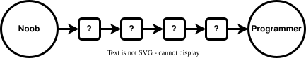
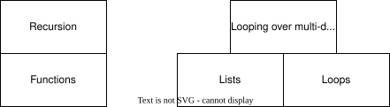
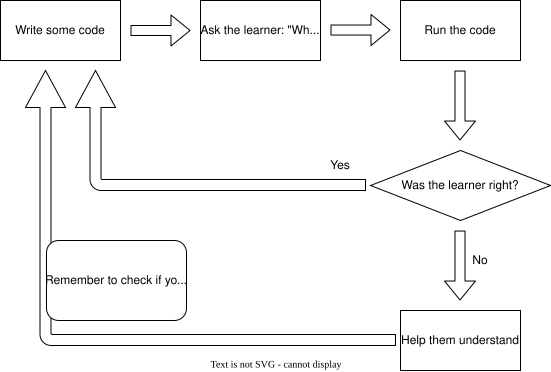

Click on the arrows on the bottom right to navigate
On a cellphone: swipe up
How to teach the foundations of Python
Hi, I'm Sheena
- Started programming > 20 years ago
- Most of my career: Software engineering
- Spent last 6 years in tech ed + ed tech
- Currently run Prelude.tech - professional training, advanced Python and soft
skills
Community work
- Python Software Foundation Director
- PyCon Africa 2025 Chair
- Co-chair PSF education and outreach workgroup
- Started Guild of Educators
Why do I feel qualified to teach teaching?
- Worked for a non profit bootcamp in SA for 5 years
- Made syllabuses (web + data eng)
- Taught loads
- Taught teachers
- Built software and processes
- > 90% grads launched careers
>90% 🤨 How??
- By talking to industry - understanding needs (and building trust)
- Learning about learning
- The science of education => the engineering of education
- Doing the reps
What are we doing here today?
- I'll show you some stuff I learned
- You'll get to share as well :)
- Raise your hand to ask questions at any time!
But first...
Who are you?
What to expect
- Foundational mindsets and values
- Learning progression
- Practical applications
Part 1
Foundational mindsets and values
The Growth Mindset
The belief that skills, and talents can be developed through effort, learning, and
persistence, rather than being fixed traits
The opposite of a growth mindset is ...
Fixed mindset
Growth or fixed?
"I'm just not technical"
Fixed Mindset
Growth or fixed?
"Challenges are opportunities"
Growth Mindset
Growth or fixed?
"I'm a natural! I don't have to try"
Fixed Mindset
Growth or fixed?
"Mistakes help me grow"
Growth Mindset
Growth or fixed?
"If I have to try hard, I lack talent"
Fixed Mindset
Growth or fixed?
"I can learn this"
Growth Mindset
Growth or fixed?
"Criticism is a personal attack"
Fixed Mindset
Growth or fixed?
"Effort leads to mastery"
Growth Mindset
Growth or fixed?
"I already know everything I need to know"
Fixed Mindset
Growth or fixed?
"Feedback is useful"
Growth Mindset
Growth or fixed?
"Mistakes mean I'm not smart"
Fixed Mindset
Growth or fixed?
"If you aren't understanding this, you just aren't cut out for it"
Fixed Mindset
Growth or fixed?
"Let's try a different approach, you'll get there"
Growth Mindset
Growth or fixed?
"Everyone struggles at first, that's part of learning"
Growth Mindset
Growth or fixed?
"This should be obvious by now"
Fixed Mindset
Growth or fixed?
"You're so smart, this must be easy for you!"
Fixed Mindset
Growth or fixed?
"I can see you worked really hard on this"
Growth Mindset
True or False?
You either have a growth mindset or you don't
False — it's a spectrum, not a switch
True or False?
If someone has a growth mindset about coding, they'll have one about everything
False — it can differ across domains
True or False?
A fixed mindset can become a growth mindset over time
True — a growth mindset can be grown!
True or False?
Some students will never develop a growth mindset
False — that's a fixed mindset about growth mindsets!
True or False?
It's possible to turn a growth mindset into a fixed one
True — destroying confidence can undo years of growth
Build a growth mindset if your students
Building mindset in your students
| Fixed mindset ❌ |
Growth mindset ✅ |
| Tell them they are smart or dumb |
Don't make them feel stupid |
| Solve their problems for them |
Don't solve their problems for them |
| Focus on talent over effort |
Celebrate effort over smarts |
| Punish failure, reward perfection |
Tell them that it's normal to struggle |
| Rush them through material |
Let them finish stuff, don't leave them behind! |
| Focus on content only |
Show them how to learn |
|
Celebrate small wins! |
Teachers should have a growth mindset too!
But teachers often need to direct their own growth
What are some ways you can grow as a teacher?
How do you know what skills to build?
Feedback
- Shows you what's working :)
- Shows you what's not working + your gaps
- Dispels illusions of competence
What is your goal?
- Goal: Students have new capabilities
- So assess those capabilities
If a student fails a quarterly exam...
- They didn't put in the work
- They were really nervous
- They were ill
- They had too many different things to learn
- The exam was badly designed
- Maybe the teacher didn't do a good job...
- Noisy signal
- Slow
IMHO, the best teachers
Find creative ways to get feedback
Take the success of their students VERY seriously
Take the success of your students very seriously
- A struggling student == A challenge for you
- Don't wait for an exam, find accurate ways to assess skills
- Be curious about your students' mental models
- Think about the meta-cognitive skills that set the best students apart - how do
you teach those?
- Dig around in their brains. Understand them!
Example
Write a function that prints a square using
hash symbols
>>> square(2)
##
##
>>> square(5)
#####
#####
#####
#####
#####
def square(size):
if size == 1:
print("#")
if size == 2:
print("##\n##")
if size == 3:
print("###\n###\n###")
...
How not to respond
"Here's the solution... let's move on"
What went wrong?
- The student is lazy
- The student is stupid
- They don't understand loops
- They don't know why generalizable solutions matter
Understand first
- Diagnose the issue
- Address the issue
Don't blame the student
Take responsibility
Education is not the filling of a pail
It's
🔥 the lighting of a fire 🔥
IMHO, the best teachers
Empower their students
But how?
How to empower students?
- Build a growth mindset
- Show them how to self-assess
- Teach them how to learn
- Show them where to find information
- Make it seem worth it (fun, curious, future-focused)
🔥 Optimise for what happens after class 🔥
Part 2
Learning progression

Skills stack on skills

If you want to teach a skill...
- Identify all the building blocks
- Teach each one in order
What do you think?
If you want to teach a skill...
- Identify all the building blocks
It's not that obvious
- Teach each one in order
If you want to teach a skill...
- Identify all the building blocks
It's not that obvious
- Teach each one in order
Not so effective, or fun
What makes information more memorable?
Option 1. Telling a person the info, then asking a question about it
OR
Option 2: Asking a question first, then telling them the info
What makes information more memorable?
Asking a question first, then telling them the info
How to apply this?
- Literally ask a question before giving info
- Give them a problem to solve before sharing the skills to solve it
- Let them come up with a problem to solve (personal projects and challenges)
Build a larger context, then fill in gaps
Don't focus on memory directly
- Understanding makes things easier to remember
- Applying skill == spaced repitition and recall
- If asked to apply missing knowledge: Gaps can get filled in. Zoom in -> Zoom
out
Sheena's levels of foundational coding
Sheena's levels of foundational coding

Sheena's levels of foundational coding

Sheena's levels of foundational coding

Part 3
Practical applications
| LEVEL 3: Problem Solver |
Questions
- How do you know what level a person is on?
- What common pitfalls/challenges exist at each level?
- How do you spot those pitfalls?
- How do you teach at each level?
- Advice to learners at each level 🔥
- What level are you at?
|
- Can solve algorithmic problems
- Apply problem decomposition, brute-forcing etc
- Medium level on Hackerrank etc
|
| LEVEL 2: Translator |
- Translate simple words to simple code
- "Easy" Hackerrank problems
|
| LEVEL 1: Read and Predict |
- Read and understand basic code
- Return, print, for, variables, etc
- Predict errors
|
LEVEL 1: Read and Predict
Scenario
One of your students is struggling. You think they might be misunderstanding how `return` statements
work.
What do you do?
The mighty loop

Core concepts for teachers
- Psychological safety first!
- Celebrate wins
- We are training coders, not parrots
- Ask: what will the code "print"?
- Try to understand before explaining
- Asking "do you understand?" is not enough
- Explain then test again (differently)
- Think in SMALL experiments
- Trick questions suck
- Teach them to test themselves
- Get familiar with all the pitfalls
- No auto-pilot
But wont AIs be writing all the code?
LEVEL 2: Translator
Can translate simple words into simple code
Common pitfalls?
- Changing lines of code at random to make it work
- Disconnect between pseudocode and real code
- Trying to do everything all at once
- Focusing on the destination
Level 3: Problem solver
- Focusing on the destination, not the journey
- Trying to be too clever/fancy
- Decomposition, brute forcing etc...
Common mistakes by teachers
- Sharing questions ahead of time and reviewing answers
- Only allowing one possible answer
- Ignoring warning signs and weirdness